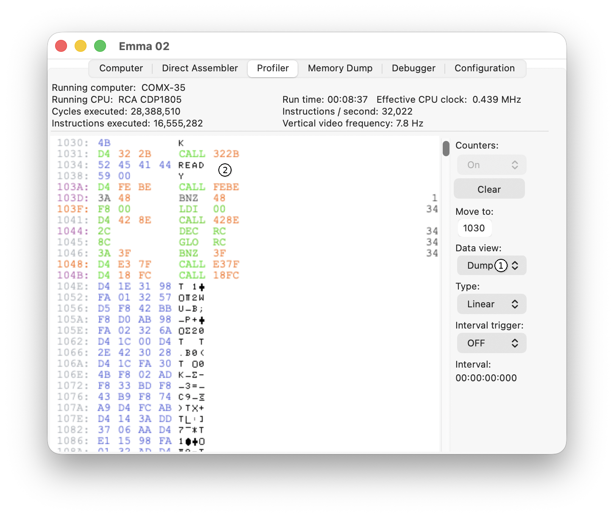
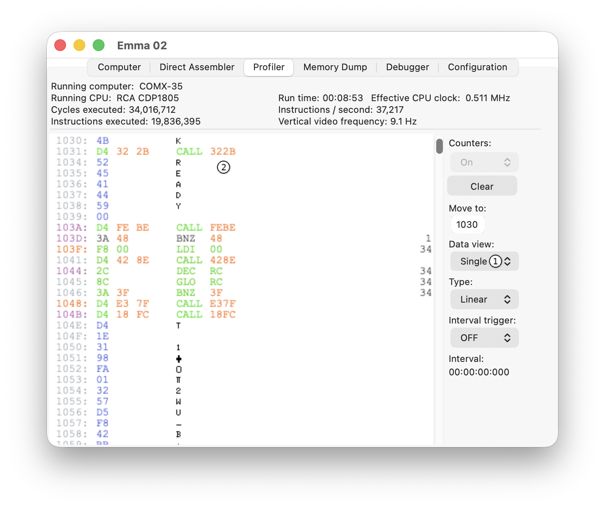

Two data views are possible, Dump or Single. The view can be switched using the Data view selector (1) shown below.
Dump view:

Single view:

In Dump view, four bytes and four characters are shown per line; in Single view, one byte and one character are shown per line.